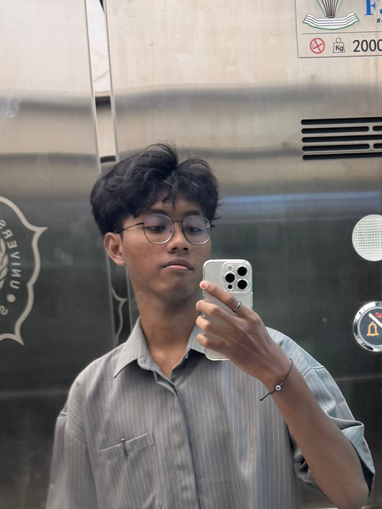

Tersedia untuk proyek baru
Halo, saya Fatih Alfarisi
Frontend Junior Developer & UI Designer
Saya membangun produk digital yang fungsional, indah, dan mudah digunakan. Dengan pengalaman lebih dari 2 tahun, saya berfokus pada kode bersih dan pengalaman pengguna yang berkesan.
Surakarta, Indonesia

2+ Tahun
Pengalaman
Pengalaman
Keahlian
Teknologi dan alat yang saya gunakan sehari-hari.
Vanilla HTML/CSS/JS
UI/UX modern
Responsive Design
Mobile-first